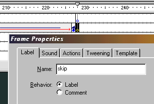
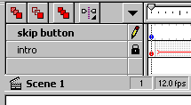
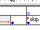

Creating a "Skip" button


If you have many transitions, or a long intro, a skipper might be apropriate. We will now create an intro skipper.
Step 1. Label the end of intro "skip".

Step 2. Create a "skip button".
Step 3. Create a new layer, and place the skip button in a frame according to the beginning of the intro.

Step 4. Give this button a "Goto and Play Frame Label [skip].
Step 5. Remember to clear the "Skip button layer" by pressing F7 on that layer, at the end of the intro thereby creating an empty keyframe.

That's it, and that's that.